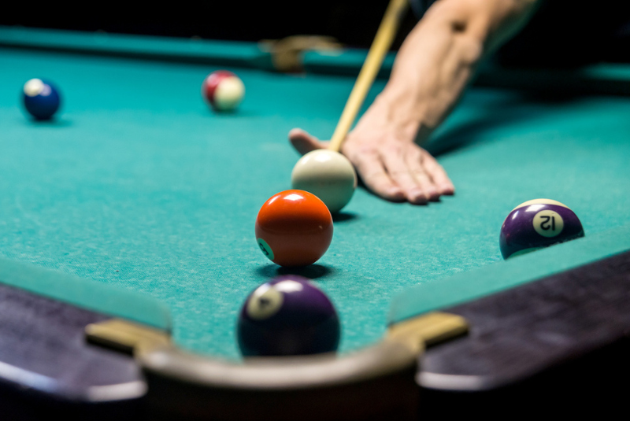
Kuka Fresca Snooker Bar
Endereço: Av. Pres. Wilson, 196 – José Menino.
Horário de Funcionamento: Terça a Quinta, das 18h à 0h. Sexta e Sábado, das 18h às 2h. Domingo, das 18h à 0h. Site oficial
Descrição: O Kuka Fresca Snooker Bar é um local descontraído, ideal para diversão entre amigos. Com mesas de sinuca de qualidade, decoração moderna e uma variedade de bebidas e petiscos, o bar proporciona uma experiência única. Perfeito para relaxar ou aproveitar um animado happy hour, o Kuka Fresca é a escolha certa para quem busca lazer e boa companhia.
.png)
Curvão Lounge
Endereço: Av. Senador Pinheiro Machado, 518 – Marapé.
Horário de Funcionamento: Terça a Quinta, das 18h à 0h. Sexta e Sábado, das 18h às 2h. Site oficial
Descrição: O Curvão Lounge , é um ambiente acolhedor com decoração moderna, perfeito para encontros descontraídos. Localizado no Marapé, oferece uma variedade musical que vai de samba a pop rock. Além disso, a casa exibe jogos de futebol, proporcionando uma experiência completa com bebidas geladas e deliciosa comida.
.png)
Bar do Dante
Endereço: R. Carvalho de Mendonça, 777 - Marapé.
Horário de Funcionamento: Terça a Sexta, das 17h à 0h. Sábado, das 12h à 0h30. Domingo, das 12h às 22h30. Site oficial
Descrição: O Bar do Dante , é um espaço acolhedor no Marapé, perfeito para encontros descontraídos com amigos durante a semana. Elogiado pelo excelente atendimento e clima agradável, oferece a opção de saborear um prato de batata frita e frango à passarinho com um balde de cerveja gelada. A experiência promete ser deliciosa e relaxante.
.png)
Studio Rock Café
Endereço: Av. Mal. Deodoro, 110 – Gonzaga.
Horário de Funcionamento: Quinta, das 20h às 2h. Sexta e Sábado, das 22h às 4h. Site oficial
Descrição: O Studio Rock Café, no Gonzaga, é um paraíso para os amantes do Rock'n Roll. Com uma atmosfera única que mistura estúdio, lounge e bar, oferece cervejas geladas, deliciosos aperitivos e uma seleção musical que agrada a todas as gerações. Uma escolha imperdível para quem busca boa música e entretenimento em Santos.
.png)
472 Lounge & Food
Endereço: Av. Washington Luis, 472 - Gonzaga.
Horário de Funcionamento: Terça a Sexta, das 17h à 1h. Sábado e Domingo, das 12h à 1h. Site oficial
Descrição: O 472 Lounge & Food, destaca-se por seu cardápio variado. Os clientes têm a oportunidade de escolher entre uma variedade deliciosa de hambúrgueres, porções irresistíveis e até pratos de comida japonesa, tudo enquanto desfrutam de um ambiente descontraído e uma atmosfera agradável. A boa notícia é que a música ao vivo faz parte da experiência todos os dias.
.png)
Cola na Base
Endereço: R. Alagoas, 06 – Gonzaga.
Horário de Funcionamento: Quarta a Sábado, das 17h à 1h. Domingo, das 12h às 20h. Site oficial
Descrição: Ao adentrar o Cola na Base, depara-se com uma organização atraente, com mesinhas e espreguiçadeiras estrategicamente dispostas. O ambiente íntimo do local o torna ideal para encontros e confraternizações, proporcionando uma experiência agradável. Não deixe de incluir este espaço em sua lista de opções.
.png)
Arapuka GastroBar
Endereço: R. Azevedo Sodré, 123 - Gonzaga.
Horário de Funcionamento: Segunda a Sexta, das 17h à 1h. Sábado, das 12h à 1h. Domingo, das 15h à 1h. Site oficial
Descrição: O Arapuka GastroBar, destaca-se como um bar charmoso e descolado, com a proposta de proporcionar uma experiência gastronômica única. O cardápio inclui não apenas drinks autorais, mas também opções com toques típicos de diversos países, como EUA, México, Cuba, Índia e França. Uma oportunidade de viajar pelos sabores sem sair de Santos.

Naus Restaurante Bar
Endereço: R. Tolentino Filgueiras, 55 - Gonzaga.
Horário de Funcionamento: Segunda a Quinta, das 12h às 15h e 18h às 23h. Sexta, das 12h às 15h e 18h à 0h. Domingo, das 12h às 23h. Site oficial
Descrição: O Naus Restaurante Bar, é o local ideal para os amantes de navegação. Com uma decoração temática envolvente, a casa se destaca por sua especialização em frutos do mar e pela oferta de excelentes drinks. Uma ótima escolha para um almoço familiar, proporcionando uma experiência gastronômica única.
.png)
Esquina do Chopp
Endereço: Av. Vicente de Carvalho, 54 - Gonzaga.
Horário de Funcionamento: Terça a Quinta, das 17h às 23h. Sexta, das 11h à 1h. Sábado, das 12h à 1h. Domingo, das 12h às 21h Site oficial
Descrição: O Esquina do Chopp, é o lugar perfeito para um happy hour com vista para a deslumbrante orla santista. Espaçoso e confortável, o bar oferece iscas de peixe, lula e camarão, além de pratos executivos, proporcionando uma experiência gastronômica simples e de alto nível.
.png)
Gonzabar
Endereço: Av. Ana Costa, 555 - Gonzaga.
Horário de Funcionamento: Diariamente das 10h à 0h. Site oficial
Descrição: O Gonzabar, situado dentro do Hotel Parque Balneário, combina elegância com um ambiente descontraído, sendo o local ideal para conversas agradáveis, graças ao seu ambiente silencioso. Com discrição, excelentes drinks e comida de qualidade, o bar é uma escolha refinada para os mais exigentes.
.png)
Fit and Fun
Endereço: R. Lobo Vianna, 18 - Boqueirão.
Horário de Funcionamento: Domingo a Quinta, das 17h à 0h. Sexta e Sábado, das 17h à 1h. Site oficial
Descrição: O Fit and Fun, destaca-se por seu ambiente agradável e atendimento eficiente, tornando-o uma ótima escolha para celebrar aniversários. As caipirinhas e o Gin com Tônica são altamente recomendados, mas é preciso cuidado para não exagerar. Uma opção animada e descontraída para desfrutar de momentos especiais.
.png)
Cinza General Store
Endereço: R. da Paz, 51 - Boqueirão.
Horário de Funcionamento: Sexta, das 18h às 2h. Sábado, das 19h às 2h. Domingo, das 18h à 1h. Site oficial
Descrição: O Cinza General Store, é um estabelecimento curioso e superagradável, reunindo bar, loja de surf, café e galeria de arte. Atraindo tanto a turma praiana de Santos quanto outros públicos, o local é versátil, transformando-se de um café simpático pela manhã para uma animada balada à noite, com intervenções artísticas, DJs e muita animação. Uma parada certa para quem busca inovação.
.png)
HP Geek Bar and Burger
Endereço: Av. Dr. Epitácio Pessoa, 117 - Boqueirão.
Horário de Funcionamento: Terça a Domingo, das 18h à 0h. Site oficial
Descrição: O HP Geek Bar and Burger, em Santos, une bar e hamburgueria com uma temática geek. Com ambiente agradável, atendimento elogiado e um cardápio caprichado, incluindo opções vegetarianas e veganas, o local está dentro do Save Point, um complexo gastronômico e cultural. Uma experiência completa para os aficionados por games, filmes e quadrinhos.
.png)
Dantas Music Bar
Endereço: Av. Senador Dantas, 401 – Embaré.
Horário de Funcionamento: Sexta e Sábado, das 20h às 3h. Site oficial
Descrição: O Dantas Music Bar, é um ponto de encontro jovial, especialmente recomendado para os amantes do som das guitarras. Inaugurado em 2015, o ambiente é climatizado e possui isolamento acústico, ideal para apreciar clássicos do jazz, blues e rock. Para acompanhar, não deixe de experimentar a elogiada batata canoa com calabresa no recheio. Esta noitada em Santos promete ser memorável, então prepare-se para uma experiência musical única.
.png)
Bar do Toninho
Endereço: Av. Dr. Epitácio Pessoa, 241 - Embaré.
Horário de Funcionamento: Terça, Quinta e Sábado, das 8h à 1h. Sexta, das 8h às 2h. Domingo e Segunda, das 9h à 1h. Site oficial
Descrição: O Bar do Toninho, é um paraíso gastronômico para os bons de garfo. O local oferece iguarias irresistíveis, como camarão à milanesa, isca de peixe e os renomados bolinhos de bacalhau, tornando-se um destino imperdível para os amantes de frutos do mar. As delícias do cardápio harmonizam perfeitamente com uma cerveja bem gelada, proporcionando uma experiência culinária única.
.png)
Ruskin Arms Pub
Endereço: Av. Dr. Epitácio Pessoa, 340 - Aparecida.
Horário de Funcionamento: Terça, Quarta, Quinta e Domingo, das 18h à 1h. Sexta e Sábado, das 18h às 2h. Site oficial
Descrição: O Ruskin Arms Pub, é o local ideal para os amantes de chopp, com uma variedade incrível de opções. O cardápio inclui hambúrgueres, pizzas, petiscos e uma seleção de drinks para animar a noite. Nos dias de jogo, o bar oferece um telão para não perder nenhum momento decisivo do futebol.
.png)
Qualeh O Bar
Endereço: Av. Dr. Epitácio Pessoa, 227 - Ponta da Praia.
Horário de Funcionamento: Terça a Sexta e Domingo, das 17h à 0h. Sábado, das 12h à 1h. Site oficial
Descrição: O Qualeh O Bar, na Ponta da Praia, encanta pela sua atmosfera charmosa e acolhedora. Com uma diversidade de bebidas que incluem cervejas, drinks, cocktails e caipirinhas, o bar cativa os clientes. O cardápio oferece uma variedade de porções, petiscos, lanches, tábuas e doces, com opções veganas para satisfazer todos os gostos. Além disso, o destaque fica por conta da pet friendly, tornando o ambiente ainda mais convidativo.
.png)
Mucha Breja Beer Store
Endereço: Av. Rei Alberto I, 161 - Ponta da Praia.
Horário de Funcionamento: Segunda e Terça, das 18h à 0h. Quarta, das 18h à 0h30. Quinta, das 18h à 1h. Sexta a Domingo das, 18h à 1h30. Site oficial
Descrição: O Mucha Breja Beer Store é um pub aconchegante, destaca-se pela ampla carta de cervejas artesanais e oferece hambúrgueres e petiscos gourmets muito bem avaliados, proporcionando aos clientes uma experiência única que combina variedade de cervejas com deliciosas opções gastronômicas.
.png)
Cadillac Vintage Bar
Endereço: R. São Bento, 50 - Centro Histórico.
Horário de Funcionamento: Sexta e Sábado, das 22h às 4h. Site oficial
Descrição: Se você é fã de filmes clássicos como 'De Volta para o Futuro' ou de toda a vibe que envolve a décado de oitenta, vai adorar o Cadillac Vintage Bar no Centro Histórico. O ambiente nostálgico e peculiar do bar, que também funciona como museu, transporta os visitantes para as décadas de 1950 a 1980. Com uma pista de dança, iluminação retrô e um charme saudosista, este local oferece uma experiência única para os amantes do passado.
Explore
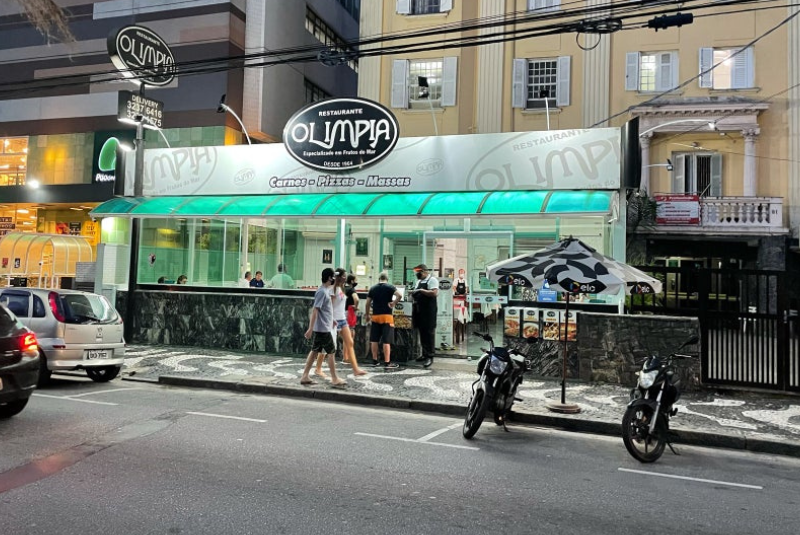
Olímpia
Endereço: Av. Presidente Wilson, 92 - José Menino.
Horário de Funcionamento: Segunda a Quinta, das 9h às 23h30. Sexta a Domingo, 9h à 0h. Feriados, das 9h à 0h. Site oficial
Descrição: Com meio século de tradição e qualidade, o Restaurante Olímpia, é um ícone gastronômico. Desde 1964, mantém o compromisso com o melhor atendimento e pratos caprichados, sempre preparados com produtos frescos adquiridos diariamente. Em um ambiente aconchegante à beira da orla da praia de Santos, o Olímpia oferece mais de 300 opções de pratos, uma excelente carta de vinhos e irresistíveis sobremesas, proporcionando uma experiência culinária memorável.

Mezanino do Pão de Açucar
Endereço: Av. Pres. Wilson, 94 - José Menino.
Horário de Funcionamento: Diariamente, das 11h30 às 14h30. Site oficial
Descrição: À beira-mar do encantador bairro José Menino, o restaurante no mezanino da loja do supermercado Pão de Açúcar proporciona uma excelente experiência gastronômica a um custo acessível. Com um cardápio diversificado e a utilização de ingredientes frescos, a culinária do Pão de Açúcar é um verdadeiro deleite para os sentidos.
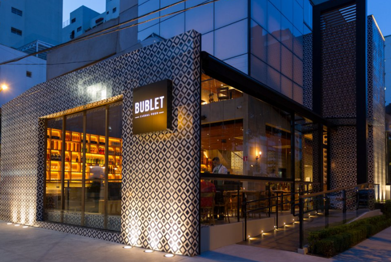
Bublet Casual Food
Endereço: Av. Mal. Floriano Peixoto, 216 - Pompéia.
Horário de Funcionamento: Terça a Quinta, das 17h às 23h. Sexta, das 17h à 0h. Sábado, das 17h à 0h30. Domingo, das 17h às 23h. Site oficial
Descrição: O Bublet, localizado em Pompéia, Santos, oferece uma proposta gastronômica descomplicada em um ambiente moderno e acolhedor. Com uma cozinha autêntica, o restaurante proporciona uma experiência única, convidando os clientes a desfrutarem de momentos agradáveis em uma atmosfera informal.
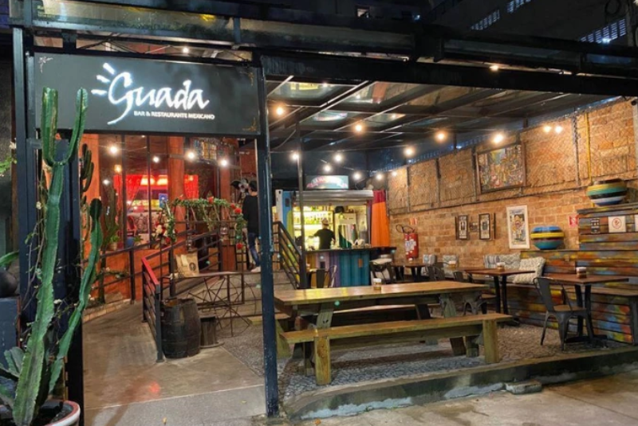
Guadalupe
Endereço: Rua Tolentino Filgueiras, 81 - Gonzaga.
Horário de Funcionamento: Quarta a Sábado, das 12h à 0h. Domingo, das 12h às 20h. Site oficial
Descrição: O Restaurante Guadalupe, destaca-se por sua atmosfera acolhedora e culinária marcante. Com um cardápio diversificado, o local oferece pratos que combinam sabores tradicionais e contemporâneos. A equipe atenciosa e o ambiente agradável tornam o Guadalupe uma escolha ideal para quem busca uma experiência gastronômica única.
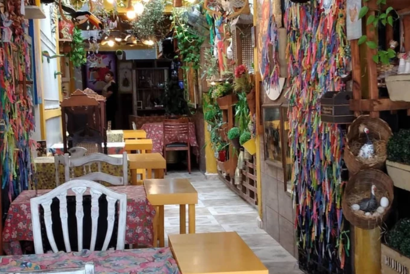
Dona Angola
Endereço: Rua Jorge Tibiriçá, 26 - Gonzaga.
Horário de Funcionamento: Diariamente, das 11h30 às 15h e das 19h30 à 0h. Site oficial
Descrição: O Restaurante Dona Angola, no coração do Gonzaga em Santos, destaca-se por oferecer uma autêntica experiência da culinária angolana. Com um ambiente acolhedor, o local proporciona aos clientes uma viagem de sabores exóticos e tradicionais. O cardápio diversificado inclui pratos que refletem a riqueza da gastronomia angolana, preparados com ingredientes frescos e saborosos. A equipe calorosa e o ambiente familiar tornam o Dona Angola uma escolha única para aqueles que buscam explorar e apreciar a rica culinária de Angola.

Seo Vegê
Endereço: Rua Tymbiras, 06 - Gonzaga.
Horário de Funcionamento: Diariamente, das 11h30 às 15h30 e das 18h30 às 22h. Site oficial
Descrição: O Restaurante Seo Vegê, destaca-se como um refúgio para apreciadores da culinária vegetariana. Com um cardápio criativo e nutritivo, o local oferece pratos saborosos e originais, priorizando ingredientes frescos. Seu ambiente acolhedor e descontraído o torna um ponto de encontro ideal para uma experiência gastronômica saudável. Com uma dedicação exclusiva à cozinha vegetariana, o Seo Vegê é uma escolha certeira para quem busca opções equilibradas e cheias de sabor em Santos.
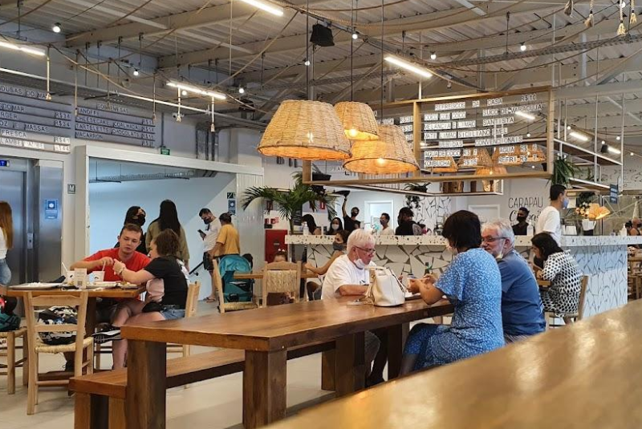
Paru - Mercado do Peixe
Endereço: Av. Gov. Mário Covas Júnior, 3050 - Ponta da Praia.
Horário de Funcionamento: Diariamente, das 9h às 18h. Site oficial
Descrição: O Paru Restaurante, oferece uma experiência gastronômica única dentro do Mercado do Peixe. Com um ambiente moderno e acolhedor, destaca-se pela culinária contemporânea e criativa, utilizando ingredientes frescos provenientes diretamente do mercado. O cardápio diversificado apresenta pratos elaborados, proporcionando uma experiência única para os paladares mais exigentes. A equipe atenciosa e o serviço de alta qualidade fazem do Paru um local distintivo para apreciadores da boa gastronomia em Santos, dentro do cenário vibrante do Mercado do Peixe.
Explore

Hiná Fish and Lounge
Endereço: Av. Alm. Saldanha da Gama, 44 - Ponta da Praia.
Horário de Funcionamento: Terça a Domingo, das 12h à 1h. Site oficial
Descrição: O Restaurante Hiná Fish and Lounge, na Ponta da Praia em Santos, destaca-se pela experiência gastronômica à beira-mar. Com ambiente contemporâneo, foco em frutos do mar frescos e cardápio sofisticado , oferece uma experiência única. A vista deslumbrante e o serviço atencioso tornam o Hiná uma escolha ideal para quem busca uma combinação perfeita entre culinária de qualidade e atmosfera encantadora em Santos.

O Lagar
Endereço: Rua Guaiaó, 70 - Aparecida.
Horário de Funcionamento: Segunda, das 6h30 às 15h. Terça a Sexta, das 6h30 às 15h e das 19h às 23h. Sábado e Domingo, das 7h às 16h e das 19h às 23h. Site oficial
Descrição: Localizado no interior do Hotel Sheraton, o Restaurante O Lagar é um destacado ponto gastronômico que proporciona não apenas refeições excepcionais, mas uma experiência completa. Servindo café da manhã, almoço e jantar, o local exige reservas antecipadas devido à alta demanda por suas disputadas mesas.
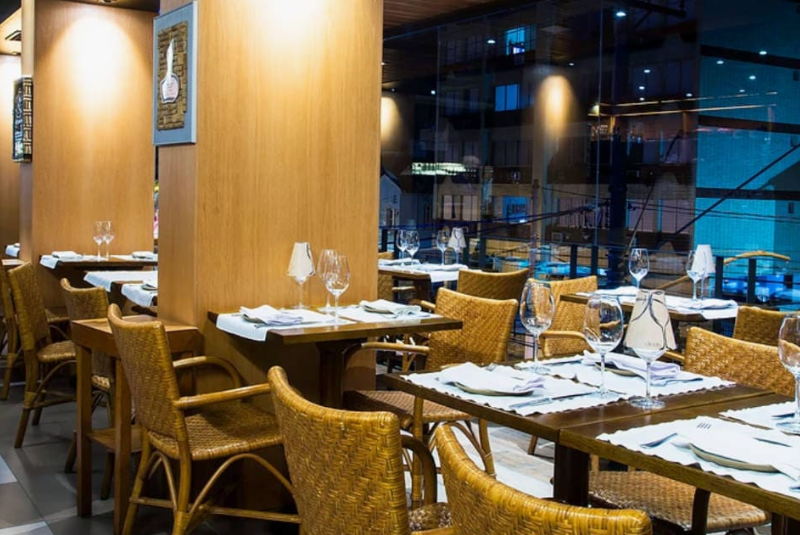
Enoteca Decanter
Endereço: Rua Azevedo Sodré, 144 - Gonzaga.
Horário de Funcionamento: Segunda a Sábado, das 12h às 23h. Domingo, das 12h às 17h. Site oficial
Descrição: O Restaurante Enoteca Decanter, é um verdadeiro paraíso para os amantes de vinhos e boa gastronomia. Com um ambiente charmoso e acolhedor, o local se destaca pela seleção cuidadosa de vinhos de alta qualidade. O cardápio refinado apresenta pratos que harmonizam perfeitamente com a vasta seleção de vinhos oferecidos. A equipe experiente e atenciosa do Enoteca Decanter proporciona uma experiência gastronômica única e sofisticada.
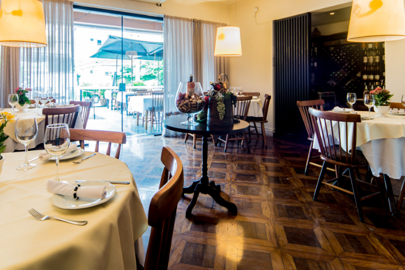
Catalina
Endereço: Rua José Caballero, 36 - Gonzaga.
Horário de Funcionamento: Diariamente, das 11h30 às 22h. Site oficial
Descrição: O Restaurante Catalina, destaca-se por oferecer uma experiência gastronômica única. Com um ambiente acolhedor, combina sabores autênticos e ingredientes frescos em seu cardápio diversificado. Desde opções tradicionais até criações inovadoras, o restaurante cativa seus clientes com uma culinária refinada. A equipe atenciosa e o ambiente agradável fazem do Catalina uma escolha distintiva para quem busca uma experiência memorável na cena gastronômica santista.

Al Kabir
Endereço: Rua Jorge Tibiriçá, 28 - Gonzaga.
Horário de Funcionamento: Segunda a Sexta, das 18h às 23h. Sábado, das 12h às 16h30 e das 18h às 23h. Domingo, das 12h às 16h30 e das 18h às 22h. Site oficial
Descrição: O Restaurante Al Kabir, localizado no Gonzaga em Santos, oferece uma autêntica experiência gastronômica árabe. Com ambiente encantador, destaca-se por pratos tradicionais do Oriente Médio, repletos de sabores marcantes e ingredientes frescos. Seu cardápio diversificado proporciona uma verdadeira viagem culinária, enquanto a equipe calorosa e o serviço atencioso completam a atmosfera acolhedora, tornando o Al Kabir uma escolha excepcional para os amantes da gastronomia árabe em Santos.

Lorient Bistrô
Endereço: Praça Fernandes Pacheco, 34 - Gonzaga.
Horário de Funcionamento: Quarta a Sábado, das 12h às 22h. Domingo, das 12h às 16h. Site oficial
Descrição: O Lorient Bistrô, no coração do Gonzaga, é uma joia gastronômica refinada, conhecido pelo ambiente charmoso e cardápio diversificado. Com pratos elaborados e técnicas sofisticadas, o bistrô cativa em jantares românticos ou refeições especiais. Proporcionando um deleite aos paladares exigentes, convida a uma jornada gastronômica única, celebrando a culinária de forma elegante e memorável.

Tasca do Porto
Endereço: Rua Quinze de Novembro, 115 - Centro.
Horário de Funcionamento: Quinta a Sábado, das 11h às 23h. Domingo a Quarta, das 11h às 16h. Site oficial
Descrição: O Restaurante Português, no Centro de Santos, oferece uma autêntica experiência gastronômica portuguesa. Com um ambiente acolhedor, destaca-se por pratos tradicionais, como o bacalhau à brás, que encantam os paladares exigentes. Cada iguaria é preparada com maestria, proporcionando uma viagem culinária única. Seja para um almoço descontraído ou uma celebração especial, o restaurante convida a saborear a riqueza e tradição da cozinha portuguesa em cada mordida.

D’Boa Latino
Endereço: Av. Dr. Epitácio Pessoa, 179 - Embaré.
Horário de Funcionamento: Segunda a Sábado, das 11h30 à 0h30. Site oficial
Descrição: O Restaurante D'Boa Latino, é conhecido por oferecer uma experiência culinária autêntica e vibrante. Com um ambiente acolhedor, destaca-se pela cozinha latino-americana que combina sabores intensos e pratos tradicionais. Seu cardápio diversificado, que vai desde opções clássicas até criações inovadoras, proporciona uma verdadeira celebração da gastronomia latina. Com uma atmosfera animada e uma equipe dedicada, o D'Boa Latino é uma escolha irresistível para quem busca uma experiência gastronômica única.
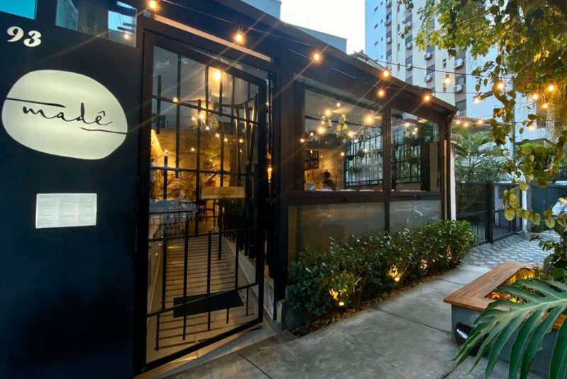
Madê
Endereço: Rua Minas Gerais, 93 - Boqueirão.
Horário de Funcionamento: Terça a Quinta, das 12h às 22h30. Sexta e Sábado, das 12h às 23h. Domingo, das 12h às 17h. Site oficial
Descrição: O Restaurante Madê, oferece uma experiência gastronômica sofisticada e saborosa. Com ambiente elegante, destaca-se pela culinária contemporânea, utilizando ingredientes frescos e técnicas inovadoras. Seu cardápio diversificado agrada aos paladares exigentes, proporcionando uma jornada culinária única. Com equipe atenciosa e apresentação cuidadosa dos pratos, o Madê é uma escolha distintiva para apreciadores da boa gastronomia.

Capitães Gastronomia
Endereço: Av. Alm. Saldanha da Gama, 33 - Ponta da Praia.
Horário de Funcionamento: Domingo a Quinta, das 12h à 0h. Sexta e Sábado, das 12h às 2h. Site oficial
Descrição: O Restaurante Capitães Gastronomia, destaca-se pela culinária refinada à beira-mar. Com ambiente acolhedor, oferece um cardápio diversificado que encanta paladares exigentes. A experiência gastronômica é aprimorada pela vista deslumbrante e pelo atendimento dedicado, tornando o Capitães uma escolha ideal para quem busca uma combinação perfeita entre boa comida e uma atmosfera encantadora.
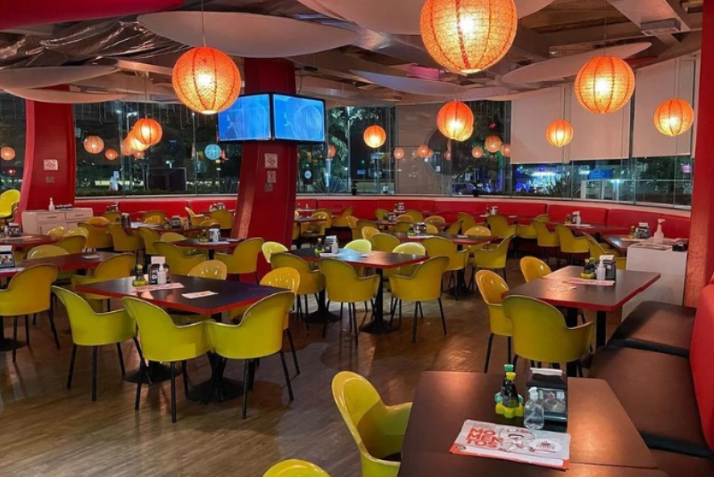
Gotissô
Endereço: Av. Washington Luís, 565 - Boqueirão.
Horário de Funcionamento: Terça a Quinta, das 19h às 23h. Sexta e Sábado, das 12h às 15h e das 19h às 23h. Domingo, das 12h às 16h30. Site oficial
Descrição: O Restaurante Gotissô, destaca-se pela autêntica culinária japonesa. Com um ambiente moderno e acolhedor, oferece pratos deliciosos e cuidadosamente preparados. Seu cardápio diversificado apresenta uma variedade de opções, desde sushis tradicionais até criações inovadoras. A equipe atenciosa e o ambiente agradável tornam o Gotissô uma escolha ideal para os amantes da gastronomia japonesa.

Mar del Plata
Endereço: Av. Alm. Saldanha da Gama, 137/139 - Ponta da Praia.
Horário de Funcionamento: Diariamente, das 12h à 0h. Site oficial
Descrição: O Restaurante Mar del Plata, é um deleite para os amantes da gastronomia. Com uma vista deslumbrante e ambiente acolhedor, destaca-se por sua culinária variada, apresentando pratos irresistíveis. O cardápio diversificado oferece opções desde frutos do mar frescos até iguarias regionais. Com atendimento atencioso, o Mar del Plata proporciona uma experiência gastronômica única.

J. Garcia
Endereço: Av. Alm. Saldanha da Gama, 77 - Ponta da Praia.
Horário de Funcionamento: Segunda, das 12h às 23h. Quarta a Sábado, das 12h às 23h. Domingo, das 12h às 20h. Site oficial
Descrição: O Restaurante J. Garcia, destaca-se por oferecer uma experiência gastronômica excepcional. Com ambiente elegante e acolhedor, o local é conhecido por sua culinária refinada e cardápio diversificado. Pratos cuidadosamente preparados e ingredientes frescos são a marca registrada do J. Garcia. Com uma equipe atenciosa e serviço de alta qualidade, o restaurante é uma escolha distintiva para apreciadores da boa gastronomia.
Explore
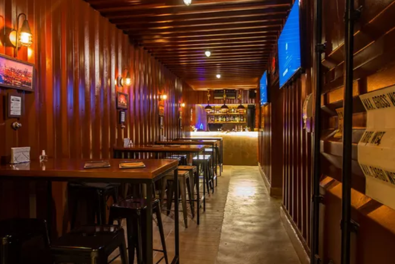
Terminal BBQ
Endereço: Rua Goiás, 116 - Gonzaga.
Horário de Funcionamento: Terça a Quinta, das 18h às 23h. Sexta, das 18h à 0h. Sábado, das 12h às 16h e das 18h à 0h. Domingo, das 12h às 16h. Site oficial
Descrição: O Terminal BBQ, no Gonzaga, Santos, é uma experiência gastronômica imperdível. Reconhecido por seu cardápio à la carte, o destaque fica para as suculentas carnes que dominam as mesas. Com opções como o menu argentino, o Dia do Hambúrguer Gourmet e o festival de fondue no inverno, o Terminal BBQ oferece variedade e sabor. Convide amigos para apreciar essas delícias em um ambiente acolhedor e aproveite a diversidade culinária que esse espaço tem a oferecer.

Ao Chopp do Gonzaga
Endereço: Avenida Ana Costa, 512 - Gonzaga.
Horário de Funcionamento: Terças e Quartas, das 12h às 16h. Quinta a Sábado, das 12h às 23h30. Domingo, das 12h às 18h. Site oficial
Descrição: A Churrascaria Ao Chopp do Gonzaga, oferece uma experiência gastronômica única, com cortes de carne suculentos preparados na brasa. Com ambiente sofisticado, destaca-se pelo atendimento atencioso e uma seleção de chopes premium. Ideal para encontros entre amigos ou celebrações especiais, é a escolha certeira para quem busca uma experiência culinária memorável.
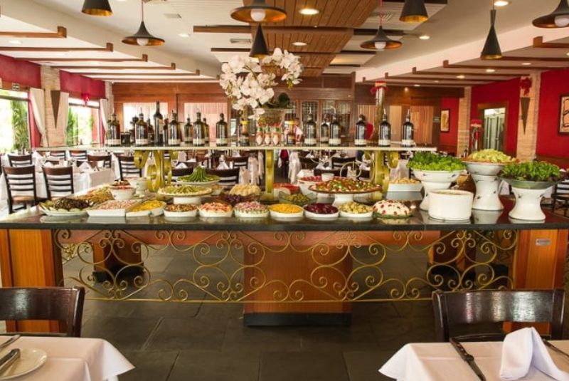
Churrascaria Tertúlia
Endereço: Av. Bartolomeu de Gusmão, 187 - Ponta da Praia.
Horário de Funcionamento: Segunda a Sexta, das 12h às 15h30 e das 19h às 22h. Sábados e Feriados, das 12h às 16h e das 19h às 22h. Domingo, das 12h às 17h. Site oficial
Descrição: A Churrascaria Tertúlia é um oásis gastronômico para os amantes de carnes nobres. Destacando-se pela excelência no churrasco brasileiro, oferece cortes premium em um ambiente acolhedor. Com um cardápio diversificado, a Tertúlia convida a desfrutar momentos únicos de boa gastronomia, unindo qualidade, paixão pela culinária e sofisticação.
Explore

Quiosque Burgman - Canal 2
Endereço: Av. Pres. Wilson, S/N - Canal 2.
Horário de Funcionamento: Segunda a Quinta, das 10h30 às 24h. Sexta a Sábado, das 10h às 2h. Domingo, das 10h30 às 24h. Site oficial
Descrição: O Quiosque Burgman no Canal 2, situado à beira-mar, oferece não apenas hambúrgueres deliciosos, mas também uma atmosfera acolhedora para os clientes e seus pets. Experimente os chopps Burgman em diferentes sabores, uma verdadeira delícia, enquanto aprecia a vista deslumbrante da praia.

Quiosque do Pastel - Canal 2
Endereço: Av. Pres. Wilson, S/N - Canal 2.
Horário de Funcionamento: Segunda a Quinta, das 10h30 às 24h. Sexta a Sábado, das 10h às 2h. Domingo, das 10h30 às 24h. Site oficial
Descrição: O Quiosque do Pastel no Canal 2 é conhecido por seus irresistíveis pastéis à beira da Praia. Além da experiência única à beira-mar, os clientes podem aproveitar promoções de chopp, tornando o momento ainda mais especial. Com variedade de pastéis doces e salgados, o Quiosque do Pastel é um convite imperdível para saborear delícias à sombra das palmeiras.
Explore

Panificadora Roxy
Endereço: Av. Senador Pinheiro Machado, 997 - José Menino.
Horário de Funcionamento: Diariamente, das 6h às 22h45. Site oficial
Descrição: Com uma história que remonta aos anos 40, a Panificadora Roxy, vai além de uma simples padaria. Inicialmente uma mercearia diversificada, o local evoluiu para oferecer não apenas pães, doces e salgados feitos artesanalmente, mas também um mini-mercado e uma mini-feirinha. Mantendo o nome e a qualidade dos produtos, a Roxy continua sendo um espaço acolhedor para encontros familiares e com amigos, preservando a essência que a tornou um ponto de referência na comunidade.

Empório Bolshoi
Endereço: Praça Benedito Calixto, 15 - Pompéia.
Horário de Funcionamento: Diariamente, das 7h às 21h. Site oficial
Descrição: O Bolshoi, na Praça Benedito Calixto, em Santos, é mais que uma padaria: é um empório encantador. Com uma variedade irresistível de pães, doces e produtos gourmet, o local se destaca pela atmosfera acolhedora. Além de ser ideal para um delicioso café da manhã, o Bolshoi oferece uma seleção única de itens especiais, consolidando-se como um ponto imperdível na Pompéia.

Empório Padaria José Menino
Endereço: Av. Pres. Wilson, 192 - José Menino.
Horário de Funcionamento: Diariamente, das 6h às 23h. Site oficial
Descrição: O Empório Padaria José Menino, destaca-se pela sua padaria artesanal e variedade de produtos gourmet. Com uma atmosfera acolhedora, é o lugar ideal para apreciar pães frescos, doces irresistíveis e uma seleção cuidadosa de ingredientes especiais na região.
Explore

Pão de Açucar - José Menino
Endereço: Av. Pres. Wilson, 94.
Horário de Funcionamento: Segunda a Quinta, das 7h às 22h. Sexta a Domingo, das 7h às 23h. Site oficial
Descrição: O Pão de Açúcar José Menino em Santos oferece uma experiência de compras completa, com layout moderno e variedade de produtos. Destacando-se pelos serviços diferenciados, é a escolha confiável para compras do dia a dia ou para encontrar itens especiais na região.
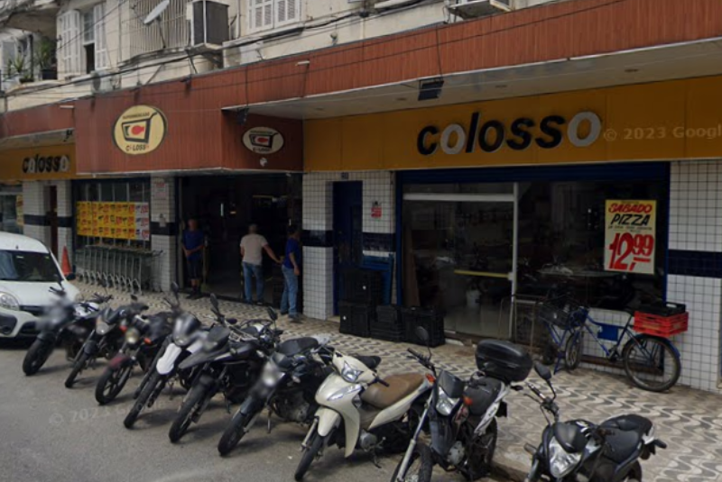
Supermercado Colosso
Endereço: R. Euclides da Cunha, 233 - Pompéia.
Horário de Funcionamento: Segunda a Sábado, das 7h às 21h. Domingo, das 7h às 14h.Site oficial
Descrição: O Supermercado Colosso Pompéia destaca-se como uma opção prática e acolhedora no cenário dos mercados de bairro. Com uma variedade abrangente de produtos frescos e atendimento personalizado, oferece uma experiência de compra amigável para a comunidade local.
Explore

Van Gogh
Endereço: Av. Mal. Floriano Peixoto, 314 - José Menino.
Horário de Funcionamento: Segunda a Quinta, das 17h às 23h30. Sexta, das 17h à 0h. Sábado e Domingo, das 11h à 0h. Site oficial
Descrição: A Pizzaria Van Gogh, é uma verdadeira obra de arte para os amantes de pizza. Com um ambiente aconchegante e descontraído, destaca-se por suas pizzas deliciosas e variadas. O cardápio oferece uma ampla seleção de sabores, desde os clássicos até combinações mais inovadoras. Com ingredientes frescos e uma massa irresistível, a Van Gogh se torna uma escolha perfeita para quem busca uma experiência gastronômica única.

Big Pizzas
Endereço: R. Mal Hermes, 2 - Boqueirão.
Horário de Funcionamento: Diariamente, das 18h30 à 0h. Site oficial
Descrição: Descubra mais de uma década de tradição na Big Pizzas, famosa por suas irresistíveis pizzas assadas na pedra. Com ingredientes de qualidade, a pizzaria oferece 65 sabores, além de cervejas geladas e vinhos finos. Em um ambiente rústico e acolhedor, desfrute de um atendimento excepcional. Uma experiência gastronômica única, unindo tradição e excelência para momentos memoráveis.

Pizzaria Kokimbo'S
Endereço: R. da Paz, 61 - Boqueirão.
Horário de Funcionamento: Domingo a Sexta, das 18h às 23h. Sábado, das 18h à 0h. Site oficial
Descrição: Com 34 anos de tradição, a Kokimbos Pizzas é uma verdadeira receita de sucesso. Desde sua inauguração em 1989, essa pizzaria dedicou décadas de trabalho e paixão, estabelecendo-se como referência em pizzas finas e crocantes na Baixada Santista. Com um compromisso contínuo com a qualidade, a Kokimbos conquista seus clientes ao longo dos anos, proporcionando uma experiência deliciosa e marcante.
Explore
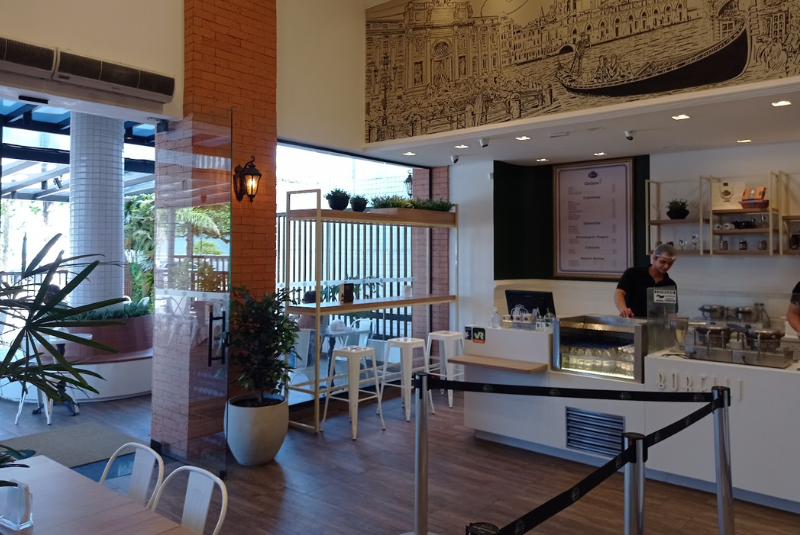
Gelato Borelli
Endereço: Av. Pres. Wilson, 48 - José Menino.
Horário de Funcionamento: Diariamente, das 12h ás 23h. Site oficial
Descrição: A Gelato Borelli, oferece uma experiência sorveteira única. Com uma variedade de sabores, seus gelatos são verdadeiras obras-primas, feitos com ingredientes frescos. Além dos clássicos, a sorveteria apresenta opções sazonais e acompanhamentos irresistíveis, como waffles crocantes. O atendimento caloroso completa a visita, tornando-a memorável para todas as idades. Uma parada obrigatória para os amantes de sorvetes de qualidade.

Sorveteria Royal
Endereço: Av. Senador Pinheiro Machado, 1030 - Loja 2 - José Menino.
Horário de Funcionamento: Diariamente, das 09h á 0h. Site oficial
Descrição: A Sorveteria
Explore

Cheirin Bão Pompeia
Endereço: Praça Benedito Calixto, 11 - Pompéia.
Horário de Funcionamento: Segunda a Sábado, das 8h às 19h. Domingo, das 8h às 14h. Site oficial
Descrição: A Cheirin Bão Pompeia, é uma cafeteria charmosa na Praça Benedito Calixto. Com uma variedade irresistível de cafés, o ambiente acolhedor torna-se o local ideal para apreciar momentos de relaxamento. Destacando-se pela qualidade dos produtos, a Cheirin Bão Pompeia oferece uma experiência única aos amantes de café.

Bossa Café e Bistrô
Endereço: Rua Minas Gerais, 85 - Boqueirão.
Horário de Funcionamento: Diariamente, das 8h às 20h. Site oficial
Descrição: A Bossa Café e Bistrô, é um refúgio acolhedor para os amantes de café e boa gastronomia. Com um ambiente charmoso, a cafeteria destaca-se por seus cafés especiais e opções gastronômicas deliciosas. O cardápio diversificado oferece desde cafés aromáticos até pratos leves e saborosos. A equipe atenciosa e o ambiente aconchegante fazem da Bossa Café e Bistrô um local ideal para desfrutar de momentos agradáveis e sabores excepcionais.

Café Carioca
Endereço: Praça Visc. de Mauá, 01 - Centro Histórico.
Horário de Funcionamento: Segunda a Sexta, das 7h às 21h30. Sábado, das 9h às 18h. Domingo, das 11h às 18h. Site oficial
Descrição: Desde 1939, o Café Carioca permanece como um ponto de encontro tradicional no coração do centro histórico de Santos. Com uma atmosfera tranquila e bucólica, essa mistura de café e bar exala o sabor da história, acrescentando valor aos momentos de confraternização. Seja na degustação de uma cerveja gelada ou no apreciar de um cafezinho, a visita a esse atrativo é garantia de uma experiência memorável.

Cafeteria do Museu
Endereço: Rua 15 de Novembro, 95 - Centro Histórico.
Horário de Funcionamento: Terça a Sábado, das 9h às 17h. Domingo, das 10h ás 17h. Site oficial
Descrição: A cafeteria do Museu do Café oferece uma experiência encantadora, unindo o irresistível aroma do café à riqueza histórica do local. Com um ambiente acolhedor, é o lugar ideal para uma pausa tranquila, apreciando especialidades de café enquanto se mergulha na cultura do museu. Seja desfrutando de um expresso ou explorando as opções gastronômicas, a cafeteria proporciona um momento agradável no contexto histórico do Museu do Café.